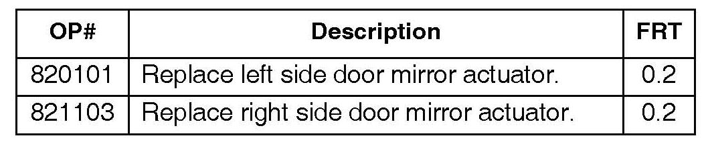
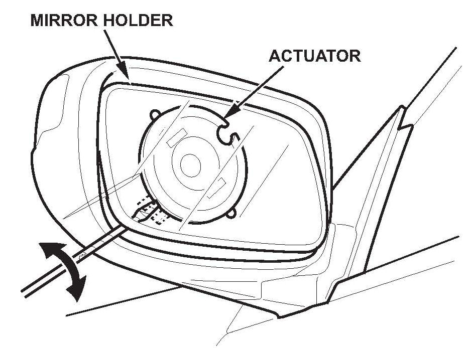
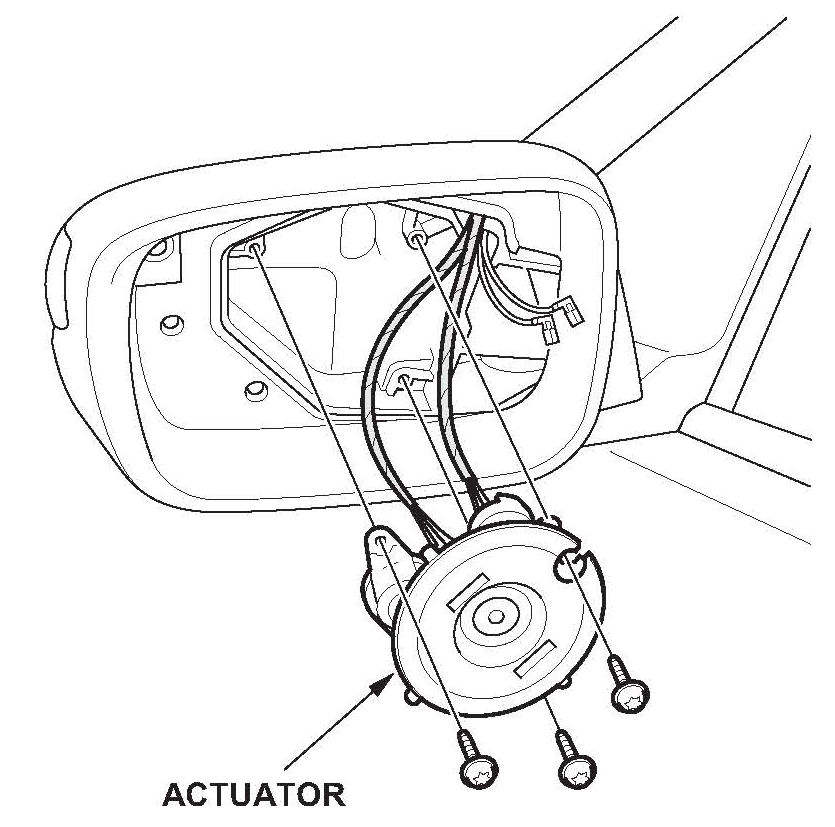
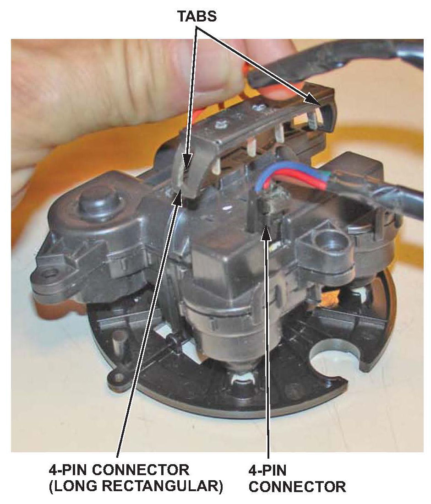
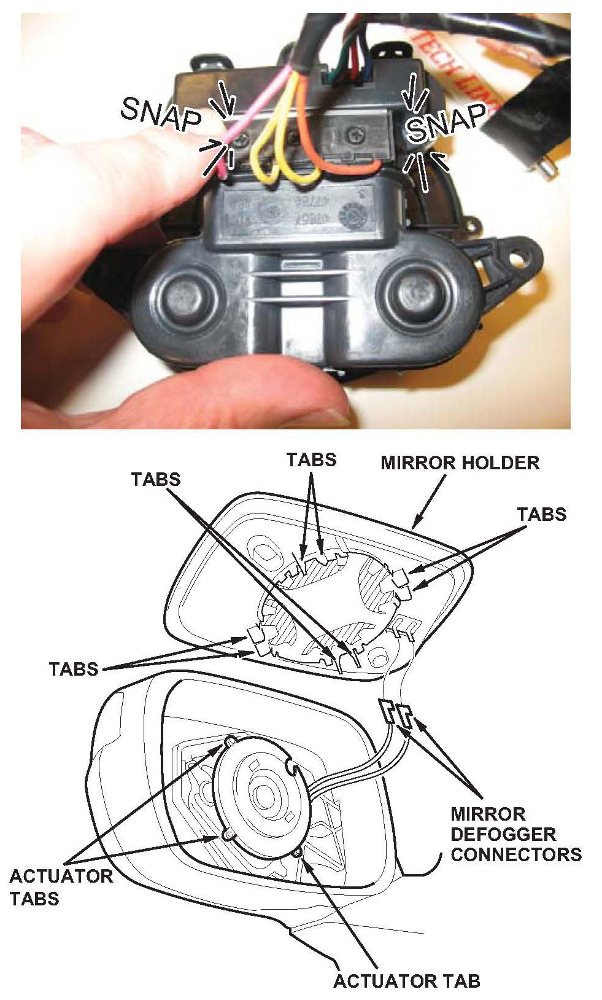

Electrical - Erratic Memory System/Door Mirror Operation
09-047April 26, 2011
Applies To:
2007-09 MDX - ALL
2006-08 TL - ALL
Door Mirror and DPMS Do Not Work Properly
(Supersedes 09-047, Door Mirror Does Not Work Properly, dated March 20, 2010, to revise the information marked by the asterisks)
*REVISION SUMMARY
Driving Position Memory System (DPMS) was added to the title.*
SYMPTOM
Either or both of the door mirrors have one or more of these symptoms:
^ After shifting out of R, the power mirror does not return to its normal position.
^ When shifting into R, or adjusting the mirror with its adjusting switch, the mirror chatters or pulses.
^ The DPMS doesn't recall one or both of the mirror memory positions.
^ The DPMS moves the driver's seat 1 inch, then stops.
PROBABLE CAUSE
Faulty door mirror actuator.
CORRECTIVE ACTION
Replace the door mirror actuator(s).
PARTS INFORMATION
Door Mirror Actuator: P/N 76210-STX-H03
WARRANTY CLAIM INFORMATION

The normal warranty applies.
Failed Part: P/N 76210-STX-H02
Defect Code: 03214
Symptom Code: 03214
Skill Level: Repair Technician
REPAIR PROCEDURE
1. Adjust the mirror to its fully upward position.
2. Separate the mirror holder from the mirror actuator.
^ Insert a long, thin, flat-tipped screwdriver (wrapped with protective tape) under the mirror holder, and between the mirror holder and mirror actuator.
^ Separate the parts by twisting the screwdriver.
^ If the mirror glass doesn't come off, insert the screwdriver farther under the mirror holder, and twist again.
NOTE:
^ Use a flashlight to help you see the proper location for the screwdriver.

^ Do not pry up to separate the two parts, or you may break the mirror glass or the mirror actuator.
3. Disconnect the two mirror defogger connectors from the heater pad terminals.

4. Remove the mirror actuator from the mirror housing (three Torx screws).
5. Disconnect the two 4P connectors on the back of the mirror actuator.

NOTE:
Use a small jeweler's screwdriver to release the two tabs on either side of the long rectangular connector. Lift the connector straight off the mirror actuator. Be careful not to bend the pins during removal, as they can be easily damaged.
6. Install a new mirror actuator, and connect the connectors.
NOTE:
^ When connecting the long rectangular connector, make sure each pin aligns with the slots in the actuator.

^ Make sure the tabs are engaged by pressing down at each end of the connector with your finger. You should hear the connector snap into place.
7. Install the mirror actuator into the mirror housing.
8. Reconnect the two mirror defogger connectors to the heater pad terminals.
9. Install the mirror holder on the mirror actuator by aligning the tabs on the mirror holder so they line up on each side of the mirror actuator tabs, then carefully push on the mirror holder until it locks into place.
10. Make sure the mirror works properly.

Disclaimer